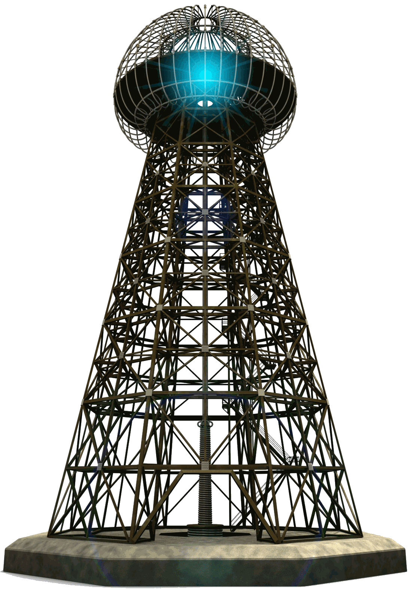

Nikola Tesla was born in 1856 in what is now Croatia to Serbian parents Milutin and Djuka Tesla. His father was a priest, an intellectual who prodded his son to develop unusual mental discipline. His mother was an inventor of many time-saving devices used for domestic tasks. Despite his early success at school and obvious interest in experimenting with mechanical devices, Tesla's father was determined that young Nikola become a minister. Only after Tesla sank into an acute physical decline did his father relent and allow him to continue his scientific education at Graz Polytechnic Institute in Austria.
While still a student, Tesla began to think about the possibilities of alternating current (AC) electricity. AC electricity could generate high voltages for long distances without growing weaker. Tesla became convinced that AC was far more effective and less costly than direct current (DC) electricity, which was more common at the time.
After three years at the Graz Polytechnic Institute, Tesla stopped attending lectures. He left Graz in 1878 and began working as a draughtsman in Maribor. In 1880, Tesla moved to Prague to continue his studies at the Karl-Ferdinand University. Leaving Prague in 1881, Tesla moved to Budapest where Ferenc Puskás hired him to help install an Edison telephone exchange there. The Continental Edison Company sent Tesla to work in Paris and Strasbourg, where his work caught the eye of Charles Batchelor, head of Edison's operations in France, who invited Tesla to work for Edison in the United States. In 1886 Tesla founded the Tesla Electric Company, which funded his arc light experiments. More importantly, Tesla returned to his AC experiments and within two years had applied for more than thirty patents on his system.
After agreeing to a contract that turned over AC development and patents to the Westinghouse Corporation, Tesla became a wealthy man. This decision affected his future work because he had fewer financial resources for laboratory space and equipment. He worked on a number of other inventions, including a transformer that changed low voltage to high voltage with a safe electrical current. This transformer is known as the Tesla coil.

The Tesla coil is one of Nikola Tesla's most famous inventions. It is essentially a high-frequency air-core transformer. It takes the output from a 120vAC to several kilovolt transformer & driver circuit and steps it up to an extremely high voltage. Voltages can get to be well above 1,000,000 volts and are discharged in the form of electrical arcs. Tesla himself got arcs up to 100,000,000 volts, but I don't think that has been duplicated by anybody else. Tesla coils are unique in the fact that they create extremely powerful electrical fields. Large coils have been known to wirelessly light up florescent lights up to 50 feet away, and because of the fact that it is an electric field that goes directly into the light and doesn't use the electrodes, even burned-out florescent lights will glow.
Modern high-voltage enthusiasts usually build Tesla coils similar to some of Tesla's "later" 2-coil air-core designs. These typically consist of a primary tank circuit, a series LC (inductance-capacitance) circuit composed of a high-voltage capacitor, spark gap, and primary coil; and the secondary LC circuit, a series-resonant circuit consisting of the secondary coil plus a terminal capacitance or "top load". In Tesla's more advanced (magnifier) design, a third coil is added. The secondary LC circuit is composed of a tightly coupled air-core transformer secondary coil driving the bottom of a separate third coil helical resonator. Modern 2-coil systems use a single secondary coil. The top of the secondary is then connected to a topload terminal, which forms one 'plate' of a capacitor, the other 'plate' being the earth (or "ground"). The primary LC circuit is tuned so that it resonates at the same frequency as the secondary LC circuit. The primary and secondary coils are magnetically coupled, creating a dual-tuned resonant air-core transformer. Earlier oil-insulated Tesla coils needed large and long insulators at their high-voltage terminals to prevent discharge in air. Later Tesla coils spread their electric fields over larger distances to prevent high electrical stresses in the first place, thereby allowing operation in free air. Most modern Tesla coils also use toroid-shaped output terminals. These are often fabricated from spun metal or flexible aluminum ducting. The toroidal shape helps to control the high electric field near the top of the secondary by directing sparks outward and away from the primary and secondary windings.